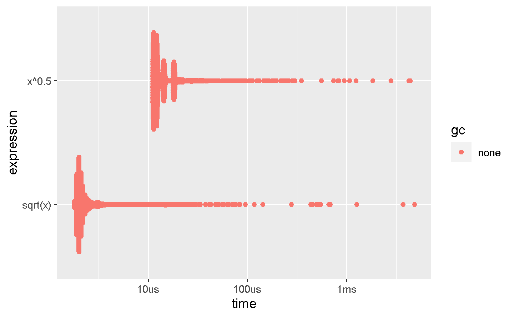

23 Measuring performance
23.1 Introduction
Programmers waste enormous amounts of time thinking about, or worrying about, the speed of noncritical parts of their programs, and these attempts at efficiency actually have a strong negative impact when debugging and maintenance are considered.
— Donald Knuth.
Before you can make your code faster, you first need to figure out what’s making it slow. This sounds easy, but it’s not. Even experienced programmers have a hard time identifying bottlenecks in their code. So instead of relying on your intuition, you should profile your code: measure the run-time of each line of code using realistic inputs.
Once you’ve identified bottlenecks you’ll need to carefully experiment with alternatives to find faster code that is still equivalent. In Chapter 24 you’ll learn a bunch of ways to speed up code, but first you need to learn how to microbenchmark so that you can precisely measure the difference in performance.
23.2 Profiling
Across programming languages, the primary tool used to understand code performance is the profiler. There are a number of different types of profilers, but R uses a fairly simple type called a sampling or statistical profiler. A sampling profiler stops the execution of code every few milliseconds and records the call stack (i.e. which function is currently executing, and the function that called the function, and so on). For example, consider f(), below:
f <- function() {
pause(0.1)
g()
h()
}
g <- function() {
pause(0.1)
h()
}
h <- function() {
pause(0.1)
}(I use profvis::pause() instead of Sys.sleep() because Sys.sleep() does not appear in profiling outputs because as far as R can tell, it doesn’t use up any computing time.)
If we profiled the execution of f(), stopping the execution of code every 0.1 s, we’d see a profile like this:
"pause" "f"
"pause" "g" "f"
"pause" "h" "g" "f"
"pause" "h" "f"Each line represents one “tick” of the profiler (0.1 s in this case), and function calls are recorded from right to left: the first line shows f() calling pause(). It shows that the code spends 0.1 s running f(), then 0.2 s running g(), then 0.1 s running h().
If we actually profile f(), using utils::Rprof() as in the code below, we’re unlikely to get such a clear result.
tmp <- tempfile()
Rprof(tmp, interval = 0.1)
f()
Rprof(NULL)
writeLines(readLines(tmp))
#> sample.interval=100000
#> "pause" "g" "f"
#> "pause" "h" "g" "f"
#> "pause" "h" "f" That’s because all profilers must make a fundamental trade-off between accuracy and performance. The compromise that makes, using a sampling profiler, only has minimal impact on performance, but is fundamentally stochastic because there’s some variability in both the accuracy of the timer and in the time taken by each operation. That means each time that you profile you’ll get a slightly different answer. Fortunately, the variability most affects functions that take very little time to run, which are also the functions of least interest.
23.2.1 Visualising profiles
The default profiling resolution is quite small, so if your function takes even a few seconds it will generate hundreds of samples. That quickly grows beyond our ability to look at directly, so instead of using utils::Rprof() we’ll use the profvis package to visualise aggregates. profvis also connects profiling data back to the underlying source code, making it easier to build up a mental model of what you need to change. If you find profvis doesn’t help for your code, you might try one of the other options like utils::summaryRprof() or the proftools package.109
There are two ways to use profvis:
From the Profile menu in RStudio.
-
With
profvis::profvis(). I recommend storing your code in a separate file andsource()ing it in; this will ensure you get the best connection between profiling data and source code.
After profiling is complete, profvis will open an interactive HTML document that allows you to explore the results. There are two panes, as shown in Figure 23.1.

Figure 23.1: profvis output showing source on top and flame graph below.
The top pane shows the source code, overlaid with bar graphs for memory and execution time for each line of code. Here I’ll focus on time, and we’ll come back to memory shortly. This display gives you a good overall feel for the bottlenecks but doesn’t always help you precisely identify the cause. Here, for example, you can see that h() takes 150 ms, twice as long as g(); that’s not because the function is slower, but because it’s called twice as often.
The bottom pane displays a flame graph showing the full call stack. This allows you to see the full sequence of calls leading to each function, allowing you to see that h() is called from two different places. In this display you can mouse over individual calls to get more information, and see the corresponding line of source code, as in Figure 23.2.

Figure 23.2: Hovering over a call in the flamegraph highlights the corresponding line of code, and displays additional information about performance.
Alternatively, you can use the data tab, Figure 23.3 lets you interactively dive into the tree of performance data. This is basically the same display as the flame graph (rotated 90 degrees), but it’s more useful when you have very large or deeply nested call stacks because you can choose to interactively zoom into only selected components.

Figure 23.3: The data gives an interactive tree that allows you to selectively zoom into key components
23.2.2 Memory profiling
There is a special entry in the flame graph that doesn’t correspond to your code: <GC>, which indicates that the garbage collector is running. If <GC> is taking a lot of time, it’s usually an indication that you’re creating many short-lived objects. For example, take this small snippet of code:
If you profile it, you’ll see that most of the time is spent in the garbage collector, Figure 23.4.

Figure 23.4: Profiling a loop that modifies an existing variable reveals that most time is spent in the garbage collector (
When you see the garbage collector taking up a lot of time in your own code, you can often figure out the source of the problem by looking at the memory column: you’ll see a line where large amounts of memory are being allocated (the bar on the right) and freed (the bar on the left). Here the problem arises because of copy-on-modify (Section 2.3): each iteration of the loop creates another copy of x. You’ll learn strategies to resolve this type of problem in Section 24.6.
23.2.3 Limitations
There are some other limitations to profiling:
Profiling does not extend to C code. You can see if your R code calls C/C++ code but not what functions are called inside of your C/C++ code. Unfortunately, tools for profiling compiled code are beyond the scope of this book; start by looking at https://github.com/r-prof/jointprof.
If you’re doing a lot of functional programming with anonymous functions, it can be hard to figure out exactly which function is being called. The easiest way to work around this is to name your functions.
-
Lazy evaluation means that arguments are often evaluated inside another function, and this complicates the call stack (Section 7.5.2). Unfortunately R’s profiler doesn’t store enough information to disentangle lazy evaluation so that in the following code, profiling would make it seem like
i()was called byj()because the argument isn’t evaluated until it’s needed byj().i <- function() { pause(0.1) 10 } j <- function(x) { x + 10 } j(i())If this is confusing, use
force()(Section 10.2.3) to force computation to happen earlier.
23.3 Microbenchmarking
A microbenchmark is a measurement of the performance of a very small piece of code, something that might take milliseconds (ms), microseconds (µs), or nanoseconds (ns) to run. Microbenchmarks are useful for comparing small snippets of code for specific tasks. Be very wary of generalising the results of microbenchmarks to real code: the observed differences in microbenchmarks will typically be dominated by higher-order effects in real code; a deep understanding of subatomic physics is not very helpful when baking.
A great tool for microbenchmarking in R is the bench package.110 The bench package uses a high precision timer, making it possible to compare operations that only take a tiny amount of time. For example, the following code compares the speed of two approaches to computing a square root.
x <- runif(100)
(lb <- bench::mark(
sqrt(x),
x ^ 0.5
))
#> # A tibble: 2 x 6
#> expression min median `itr/sec` mem_alloc `gc/sec`
#> <bch:expr> <bch:tm> <bch:tm> <dbl> <bch:byt> <dbl>
#> 1 sqrt(x) 1.8us 2.1us 246923. 848B 0
#> 2 x^0.5 11.1us 12.2us 59701. 848B 0By default, bench::mark() runs each expression at least once (min_iterations = 1), and at most enough times to take 0.5 s (min_time = 0.5). It checks that each run returns the same value which is typically what you want microbenchmarking; if you want to compare the speed of expressions that return different values, set check = FALSE.
23.3.1 bench::mark() results
bench::mark() returns the results as a tibble, with one row for each input expression, and the following columns:
-
min,mean,median,max, anditr/secsummarise the time taken by the expression. Focus on the minimum (the best possible running time) and the median (the typical time). In this example, you can see that using the special purposesqrt()function is faster than the general exponentiation operator.You can visualise the distribution of the individual timings with
plot():plot(lb) #> Loading required namespace: tidyrThe distribution tends to be heavily right-skewed (note that the x-axis is already on a log scale!), which is why you should avoid comparing means. You’ll also often see multimodality because your computer is running something else in the background.
mem_alloctells you the amount of memory allocated by the first run, andn_gc()tells you the total number of garbage collections over all runs. These are useful for assessing the memory usage of the expression.n_itrandtotal_timetells you how many times the expression was evaluated and how long that took in total.n_itrwill always be greater than themin_iterationparameter, andtotal_timewill always be greater than themin_timeparameter.result,memory,time, andgcare list-columns that store the raw underlying data.
Because the result is a special type of tibble, you can use [ to select just the most important columns. I’ll do that frequently in the next chapter.
lb[c("expression", "min", "median", "itr/sec", "n_gc")]
#> # A tibble: 2 x 4
#> expression min median `itr/sec`
#> <bch:expr> <bch:tm> <bch:tm> <dbl>
#> 1 sqrt(x) 1.8us 2.1us 246923.
#> 2 x^0.5 11.1us 12.2us 59701.23.3.2 Interpreting results
As with all microbenchmarks, pay careful attention to the units: here, each computation takes about 1,800 ns, 1,800 billionths of a second. To help calibrate the impact of a microbenchmark on run time, it’s useful to think about how many times a function needs to run before it takes a second. If a microbenchmark takes:
- 1 ms, then one thousand calls take a second.
- 1 µs, then one million calls take a second.
- 1 ns, then one billion calls take a second.
The sqrt() function takes about 1,800 ns, or 1.8 µs, to compute the square roots of 100 numbers. That means if you repeated the operation a million times, it would take 1.8 s, and hence changing the way you compute the square root is unlikely to significantly affect real code. This is the reason you need to exercise care when generalising microbenchmarking results.
23.3.3 Exercises
-
Instead of using
bench::mark(), you could use the built-in functionsystem.time(). Butsystem.time()is much less precise, so you’ll need to repeat each operation many times with a loop, and then divide to find the average time of each operation, as in the code below.n <- 1e6 system.time(for (i in 1:n) sqrt(x)) / n system.time(for (i in 1:n) x ^ 0.5) / nHow do the estimates from
system.time()compare to those frombench::mark()? Why are they different? -
Here are two other ways to compute the square root of a vector. Which do you think will be fastest? Which will be slowest? Use microbenchmarking to test your answers.